import pickle,gzip,math,os,time,shutil,torch,matplotlib as mpl,numpy as np,matplotlib.pyplot as plt
import fastcore.all as fc
from collections.abc import Mapping
from pathlib import Path
from operator import attrgetter,itemgetter
from functools import partial
from copy import copy
from contextlib import contextmanager
import torchvision.transforms.functional as TF,torch.nn.functional as F
from torch import tensor,nn,optim
from torch.utils.data import DataLoader,default_collate
from torch.nn import init
from torch.optim import lr_scheduler
from torcheval.metrics import MulticlassAccuracy
from datasets import load_dataset,load_dataset_builder
from miniai.datasets import *
from miniai.conv import *
from miniai.learner import *
from miniai.activations import *
from miniai.init import *This is not my content it’s a part of Fastai’s From Deep Learning Foundations to Stable Diffusion course. I add some notes for me to understand better thats all. For the source check Fastai course page.
Accelerated SGD, Optimizers, Momentum, RMSProp, Schedulers, Scheduler callbacks, 1cycle training
Accelerated SGD
::: {.cell 0=‘e’ 1=‘x’ 2=‘p’ 3=‘o’ 4=‘r’ 5=‘t’}
import torch
from miniai.datasets import *
from miniai.conv import *
from miniai.learner import *
from miniai.activations import *
from miniai.init import *:::
from fastcore.test import test_close
torch.set_printoptions(precision=2, linewidth=140, sci_mode=False)
torch.manual_seed(1)
import logging
logging.disable(logging.WARNING)
set_seed(42)xl,yl = 'image','label'
name = "fashion_mnist"
dsd = load_dataset(name)
bs = 1024
xmean,xstd = 0.28, 0.35
@inplace
def transformi(b): b[xl] = [(TF.to_tensor(o)-xmean)/xstd for o in b[xl]]
tds = dsd.with_transform(transformi)
dls = DataLoaders.from_dd(tds, bs, num_workers=4)metrics = MetricsCB(accuracy=MulticlassAccuracy())
astats = ActivationStats(fc.risinstance(GeneralRelu))
cbs = [DeviceCB(), metrics, ProgressCB(plot=True), astats]
act_gr = partial(GeneralRelu, leak=0.1, sub=0.4)
iw = partial(init_weights, leaky=0.1)
lrf_cbs = [DeviceCB(), LRFinderCB()]Optimizers
SGD
class SGD:
def __init__(self, params, lr, wd=0.):
params = list(params)
fc.store_attr()
self.i = 0
def step(self):
with torch.no_grad():
for p in self.params:
self.reg_step(p)
self.opt_step(p)
self.i +=1
def opt_step(self, p): p -= p.grad * self.lr
def reg_step(self, p):
if self.wd != 0: p *= 1 - self.lr*self.wd
def zero_grad(self):
for p in self.params: p.grad.data.zero_()set_seed(42)
model = get_model(act_gr, norm=nn.BatchNorm2d).apply(iw)
learn = TrainLearner(model, dls, F.cross_entropy, lr=0.4, cbs=cbs, opt_func=SGD)learn.fit(3)| accuracy | loss | epoch | train |
|---|---|---|---|
| 0.773 | 0.641 | 0 | train |
| 0.825 | 0.485 | 0 | eval |
| 0.845 | 0.425 | 1 | train |
| 0.844 | 0.429 | 1 | eval |
| 0.863 | 0.376 | 2 | train |
| 0.852 | 0.406 | 2 | eval |
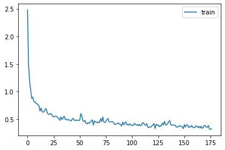
Consider the difference between weight decay and L2 regularization:
weight -= lr*wd*weight…vs…
weight.grad += wd*weightMomentum
Video is great.
check it lesson 17 1:41:03, Insight about batchsize is very interesting and beatiful.
xs = torch.linspace(-4, 4, 100)
ys = 1 - (xs/3) ** 2 + torch.randn(100) * 0.1_,axs = plt.subplots(2,2, figsize=(12,8))
betas = [0.5,0.7,0.9,0.99]
for beta,ax in zip(betas, axs.flatten()):
ax.scatter(xs,ys)
avg,res = 0,[]
for yi in ys:
avg = beta*avg + (1-beta)*yi
res.append(avg)
ax.plot(xs,np.array(res), color='red');
ax.set_title(f'beta={beta}')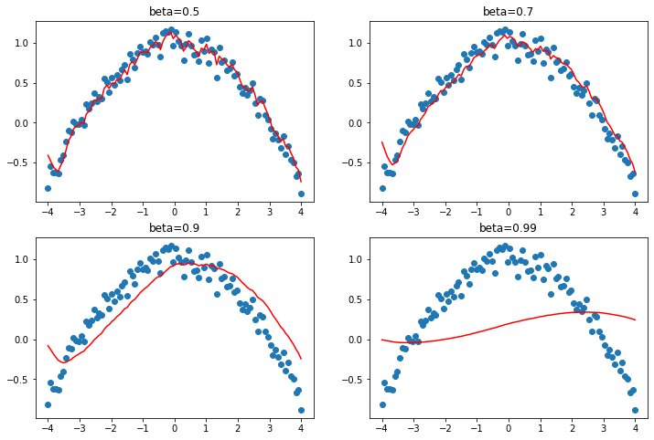
class Momentum(SGD):
def __init__(self, params, lr, wd=0., mom=0.9):
super().__init__(params, lr=lr, wd=wd)
self.mom=mom
def opt_step(self, p):
if not hasattr(p, 'grad_avg'): p.grad_avg = torch.zeros_like(p.grad)
p.grad_avg = p.grad_avg*self.mom + p.grad*(1-self.mom)
p -= self.lr * p.grad_avgset_seed(42)
model = get_model(act_gr, norm=nn.BatchNorm2d).apply(iw)
learn = TrainLearner(model, dls, F.cross_entropy, lr=1.5, cbs=cbs, opt_func=Momentum)learn.fit(3)| accuracy | loss | epoch | train |
|---|---|---|---|
| 0.784 | 0.597 | 0 | train |
| 0.845 | 0.423 | 0 | eval |
| 0.870 | 0.356 | 1 | train |
| 0.868 | 0.361 | 1 | eval |
| 0.886 | 0.311 | 2 | train |
| 0.876 | 0.343 | 2 | eval |
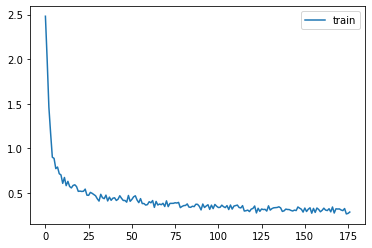
astats.color_dim()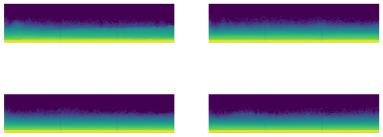
RMSProp
class RMSProp(SGD):
def __init__(self, params, lr, wd=0., sqr_mom=0.99, eps=1e-5):
super().__init__(params, lr=lr, wd=wd)
self.sqr_mom,self.eps = sqr_mom,eps
def opt_step(self, p):
if not hasattr(p, 'sqr_avg'): p.sqr_avg = p.grad**2
p.sqr_avg = p.sqr_avg*self.sqr_mom + p.grad**2*(1-self.sqr_mom)
p -= self.lr * p.grad/(p.sqr_avg.sqrt() + self.eps)set_seed(42)
model = get_model(act_gr, norm=nn.BatchNorm2d).apply(iw)
learn = TrainLearner(model, dls, F.cross_entropy, lr=3e-3, cbs=cbs, opt_func=RMSProp)
learn.fit(3)| accuracy | loss | epoch | train |
|---|---|---|---|
| 0.768 | 0.660 | 0 | train |
| 0.818 | 0.489 | 0 | eval |
| 0.847 | 0.417 | 1 | train |
| 0.844 | 0.430 | 1 | eval |
| 0.864 | 0.368 | 2 | train |
| 0.853 | 0.407 | 2 | eval |
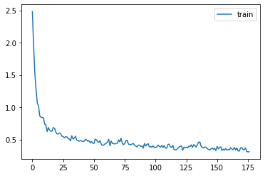
astats.color_dim()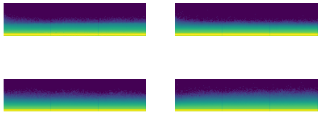
Adam
class Adam(SGD):
def __init__(self, params, lr, wd=0., beta1=0.9, beta2=0.99, eps=1e-5):
super().__init__(params, lr=lr, wd=wd)
self.beta1,self.beta2,self.eps = beta1,beta2,eps
def opt_step(self, p):
if not hasattr(p, 'avg'): p.avg = torch.zeros_like(p.grad.data)
if not hasattr(p, 'sqr_avg'): p.sqr_avg = torch.zeros_like(p.grad.data)
p.avg = self.beta1*p.avg + (1-self.beta1)*p.grad
unbias_avg = p.avg / (1 - (self.beta1**(self.i+1)))
p.sqr_avg = self.beta2*p.sqr_avg + (1-self.beta2)*(p.grad**2)
unbias_sqr_avg = p.sqr_avg / (1 - (self.beta2**(self.i+1)))
p -= self.lr * unbias_avg / (unbias_sqr_avg + self.eps).sqrt()set_seed(42)
model = get_model(act_gr, norm=nn.BatchNorm2d).apply(iw)
learn = TrainLearner(model, dls, F.cross_entropy, lr=6e-3, cbs=cbs, opt_func=Adam)
learn.fit(3)| accuracy | loss | epoch | train |
|---|---|---|---|
| 0.790 | 0.582 | 0 | train |
| 0.841 | 0.431 | 0 | eval |
| 0.867 | 0.363 | 1 | train |
| 0.863 | 0.376 | 1 | eval |
| 0.884 | 0.315 | 2 | train |
| 0.871 | 0.349 | 2 | eval |
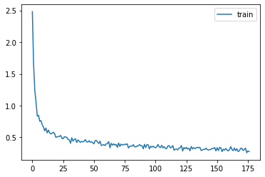
Schedulers
We’ve already seen how we can easily write a custom LR-adjusting callback or Learner, or can use the predefined PyTorch schedulers. We’ll use the predefined ones for now since there’s nothing new to learn in implementing them ourselves.
' '.join(o for o in dir(lr_scheduler) if o[0].isupper() and o[1].islower())'ChainedScheduler ConstantLR CosineAnnealingLR CosineAnnealingWarmRestarts Counter CyclicLR ExponentialLR LambdaLR LinearLR MultiStepLR MultiplicativeLR OneCycleLR Optimizer PolynomialLR ReduceLROnPlateau SequentialLR StepLR'' '.join(filter(lambda x: x[0].isupper() and x[1].islower(), dir(lr_scheduler)))'ChainedScheduler ConstantLR CosineAnnealingLR CosineAnnealingWarmRestarts Counter CyclicLR ExponentialLR LambdaLR LinearLR MultiStepLR MultiplicativeLR OneCycleLR Optimizer PolynomialLR ReduceLROnPlateau SequentialLR StepLR'learn = TrainLearner(get_model(), dls, F.cross_entropy, lr=6e-3, cbs=[DeviceCB(), SingleBatchCB()])
learn.fit(1)opt = learn.opt
' '.join(o for o in dir(opt) if o[0]!='_')'add_param_group defaults load_state_dict param_groups state state_dict step zero_grad'optSGD (
Parameter Group 0
dampening: 0
differentiable: False
foreach: None
lr: 0.006
maximize: False
momentum: 0
nesterov: False
weight_decay: 0
)param = next(iter(learn.model.parameters()))
st = opt.state[param]st{'momentum_buffer': None}len(opt.param_groups)1pg = opt.param_groups[0]list(pg)['params',
'lr',
'momentum',
'dampening',
'weight_decay',
'nesterov',
'maximize',
'foreach',
'differentiable']sched = lr_scheduler.CosineAnnealingLR(opt, 100)sched.base_lrs[0.006]sched.get_last_lr()[0.006]def sched_lrs(sched, steps):
lrs = [sched.get_last_lr()]
for i in range(steps):
sched.optimizer.step()
sched.step()
lrs.append(sched.get_last_lr())
plt.plot(lrs)sched_lrs(sched, 110)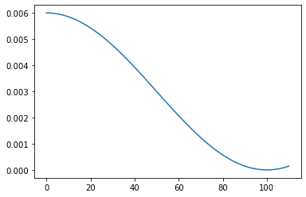
Scheduler callbacks
::: {.cell 0=‘e’ 1=‘x’ 2=‘p’ 3=‘o’ 4=‘r’ 5=‘t’}
class BaseSchedCB(Callback):
def __init__(self, sched): self.sched = sched
def before_fit(self, learn): self.schedo = self.sched(learn.opt)
def _step(self, learn):
if learn.training: self.schedo.step():::
::: {.cell 0=‘e’ 1=‘x’ 2=‘p’ 3=‘o’ 4=‘r’ 5=‘t’}
class BatchSchedCB(BaseSchedCB):
def after_batch(self, learn): self._step(learn):::
::: {.cell 0=‘e’ 1=‘x’ 2=‘p’ 3=‘o’ 4=‘r’ 5=‘t’}
class HasLearnCB(Callback):
def before_fit(self, learn): self.learn = learn
def after_fit(self, learn): self.learn = None:::
::: {.cell 0=‘e’ 1=‘x’ 2=‘p’ 3=‘o’ 4=‘r’ 5=‘t’}
class RecorderCB(Callback):
def __init__(self, **d): self.d = d
def before_fit(self, learn):
self.recs = {k:[] for k in self.d}
self.pg = learn.opt.param_groups[0]
def after_batch(self, learn):
if not learn.training: return
for k,v in self.d.items():
self.recs[k].append(v(self))
def plot(self):
for k,v in self.recs.items():
plt.plot(v, label=k)
plt.legend()
plt.show():::
def _lr(cb): return cb.pg['lr']len(dls.train)59tmax = 3 * len(dls.train)
sched = partial(lr_scheduler.CosineAnnealingLR, T_max=tmax)set_seed(42)
model = get_model(act_gr, norm=nn.BatchNorm2d).apply(iw)
rec = RecorderCB(lr=_lr)
xtra = [BatchSchedCB(sched),rec]
learn = TrainLearner(model, dls, F.cross_entropy, lr=2e-2, cbs=cbs+xtra, opt_func=optim.AdamW)
learn.fit(3)| accuracy | loss | epoch | train |
|---|---|---|---|
| 0.809 | 0.515 | 0 | train |
| 0.858 | 0.383 | 0 | eval |
| 0.881 | 0.327 | 1 | train |
| 0.874 | 0.339 | 1 | eval |
| 0.898 | 0.280 | 2 | train |
| 0.883 | 0.317 | 2 | eval |
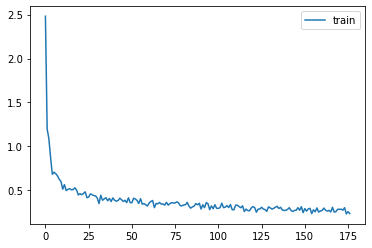
rec.plot()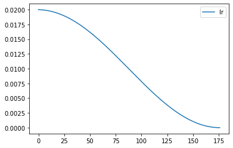
::: {.cell 0=‘e’ 1=‘x’ 2=‘p’ 3=‘o’ 4=‘r’ 5=‘t’}
class EpochSchedCB(BaseSchedCB):
def after_epoch(self, learn): self._step(learn):::
sched = partial(lr_scheduler.CosineAnnealingLR, T_max=3)
set_seed(42)
xtra = [EpochSchedCB(sched),rec]
model = get_model(act_gr, norm=nn.BatchNorm2d).apply(iw)
learn = TrainLearner(model, dls, F.cross_entropy, lr=2e-2, cbs=cbs+xtra, opt_func=optim.AdamW)
learn.fit(3)| accuracy | loss | epoch | train |
|---|---|---|---|
| 0.809 | 0.517 | 0 | train |
| 0.857 | 0.382 | 0 | eval |
| 0.881 | 0.327 | 1 | train |
| 0.875 | 0.339 | 1 | eval |
| 0.899 | 0.275 | 2 | train |
| 0.887 | 0.307 | 2 | eval |
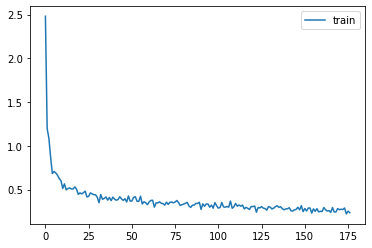
rec.plot()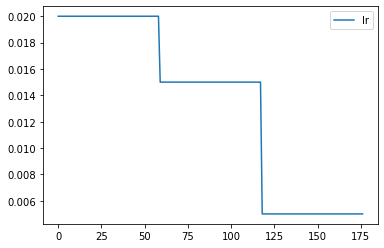
1cycle training
Paper by Leslie Smith.
def _beta1(cb): return cb.pg['betas'][0]
rec = RecorderCB(lr=_lr, mom=_beta1)set_seed(42)
lr,epochs = 6e-2,5
model = get_model(act_gr, norm=nn.BatchNorm2d).apply(iw)
tmax = epochs * len(dls.train)
sched = partial(lr_scheduler.OneCycleLR, max_lr=lr, total_steps=tmax)
xtra = [BatchSchedCB(sched), rec]
learn = TrainLearner(model, dls, F.cross_entropy, lr=lr, cbs=cbs+xtra, opt_func=optim.AdamW)
learn.fit(epochs)| accuracy | loss | epoch | train |
|---|---|---|---|
| 0.765 | 0.662 | 0 | train |
| 0.822 | 0.546 | 0 | eval |
| 0.862 | 0.376 | 1 | train |
| 0.856 | 0.413 | 1 | eval |
| 0.888 | 0.304 | 2 | train |
| 0.879 | 0.333 | 2 | eval |
| 0.904 | 0.257 | 3 | train |
| 0.901 | 0.279 | 3 | eval |
| 0.924 | 0.210 | 4 | train |
| 0.906 | 0.267 | 4 | eval |
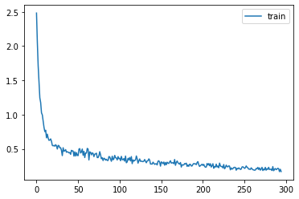
rec.plot()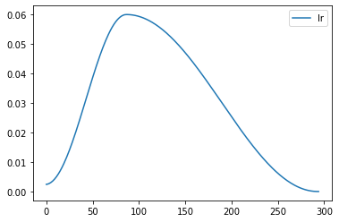
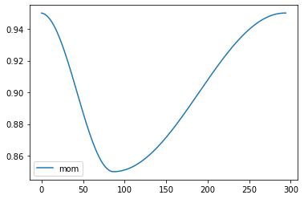
Export -
import nbdev; nbdev.nbdev_export()